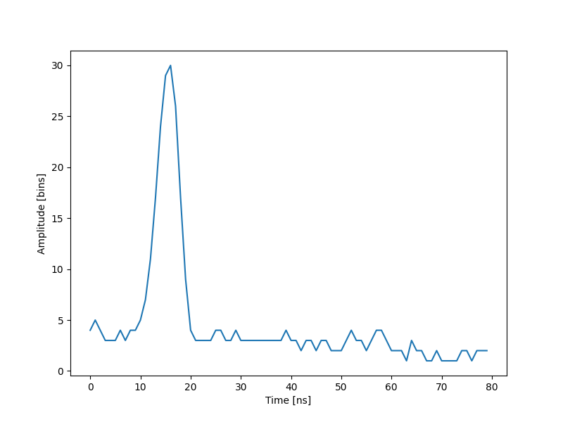

Note
Go to the end to download the full example code
The lidar system, data (1 of 2 datasets)¶
Generate a chart of the data recorded by the lidar system
import numpy as np
import matplotlib.pyplot as plt
waveform_1 = np.load("waveform_1.npy")
t = np.arange(len(waveform_1))
fig, ax = plt.subplots(figsize=(8, 6))
plt.plot(t, waveform_1)
plt.xlabel("Time [ns]")
plt.ylabel("Amplitude [bins]")
plt.show()
Total running time of the script: (0 minutes 0.084 seconds)